library(dplyr)
library(ggplot2)
library(tidyr)3 Visualización de datos
La visualización de datos es una técnica importante que complementa y apoya el análisis exploratorio. Nos vamos a centrar en crear gráficos que ilustren como se distribuyen nuestros datos, y las relaciones entre los mismos.
Para ello, vamos a usar la librería ggplot2, que permite realizar gráficos de una forma muy intuitiva y sencilla, siendo totalmente configurables a nuestro estilo.
Comenzaremos con un análisis univariado de nuestras variables binarias, luego haremos lo mismo para las variables no binarias, y por último realizaremos un análisis multivariado en el que visualicemos relaciones entre distintas variables de nuestro dataset.
dataset <- read.csv("datasets/train.csv")3.1 Variables binarias
Vamos a comenzar visualizando las variables binarias, que como vimos en el análisis exploratorio son fake, profile.pic, name..username, external.URL y private.
3.1.1 fake
hist(dataset$fake)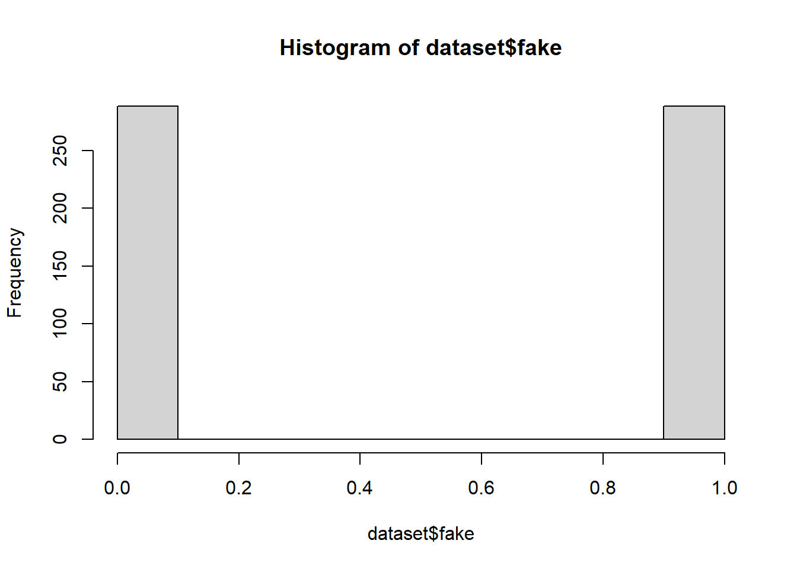
El histograma no es lo más adecuado para visualizar variables binarias (aunque se visualiza claramente), vamos a hacer a partir de ahora los gráficos de las variables binarias con ggplot. Podemos visualizarlo con un gráfico de barras:
ggplot(dataset, aes(x = factor(fake))) +
geom_bar() +
labs(x = "Cuenta falsa", y = "Cuentas",
title = "Cuentas de Instagram reales y falsas") +
scale_x_discrete(labels = c("0" = "No falsa", "1" = "Falsa"))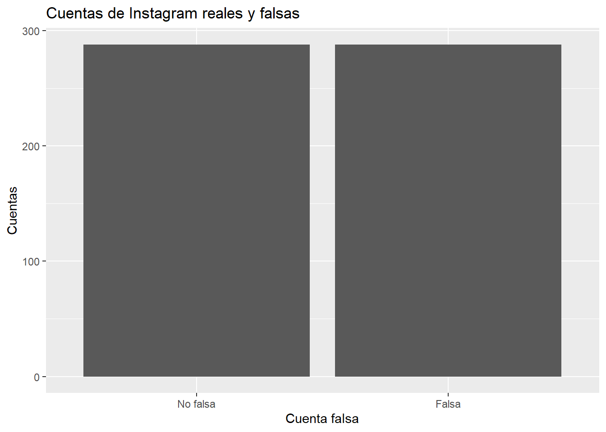
O con un gráfico circular:
fake_df <- data.frame(
category = c("No falsa", "Falsa"),
count = c(sum(dataset$fake == 0), sum(dataset$fake == 1))
)
ggplot(fake_df, aes(x = "", y = count, fill = category)) +
geom_bar(stat = "identity", width = 1) +
coord_polar("y", start = 0) +
theme_void() +
labs(title = "Proporción de cuentas reales y falsas",
fill = "Cuenta falsa") +
scale_fill_manual(values =
c("No falsa" = "#FF9999", "Falsa" = "#99DDFF"))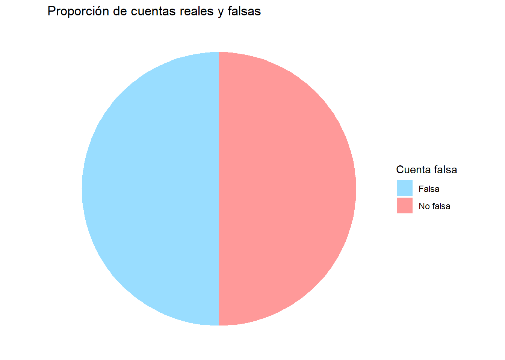
Este gráfico es muy adecuado para la visualización que queremos hacer y lo usaremos en el resto de variables binarias o con pocos valores únicos.
[1] "Cuentas falsas: 288 (50%)"[1] "Cuentas no falsas: 288 (50%)"3.1.2 profile.pic
Toma el valor 1 para las cuentas con foto de perfil y un 0 para las que no tienen.
profile_pic_df <- data.frame(
category = c("No tiene", "Tiene"),
count = c(sum(dataset$profile.pic == 0), sum(dataset$profile.pic == 1))
)
ggplot(profile_pic_df, aes(x = "", y = count, fill = category)) +
geom_bar(stat = "identity", width = 1) +
coord_polar("y", start = 0) +
theme_void() +
labs(title = "Proporción de cuentas con y sin foto de perfil",
fill = "Foto de perfil") +
scale_fill_manual(values =
c("No tiene" = "#FF9999", "Tiene" = "#99DDFF"))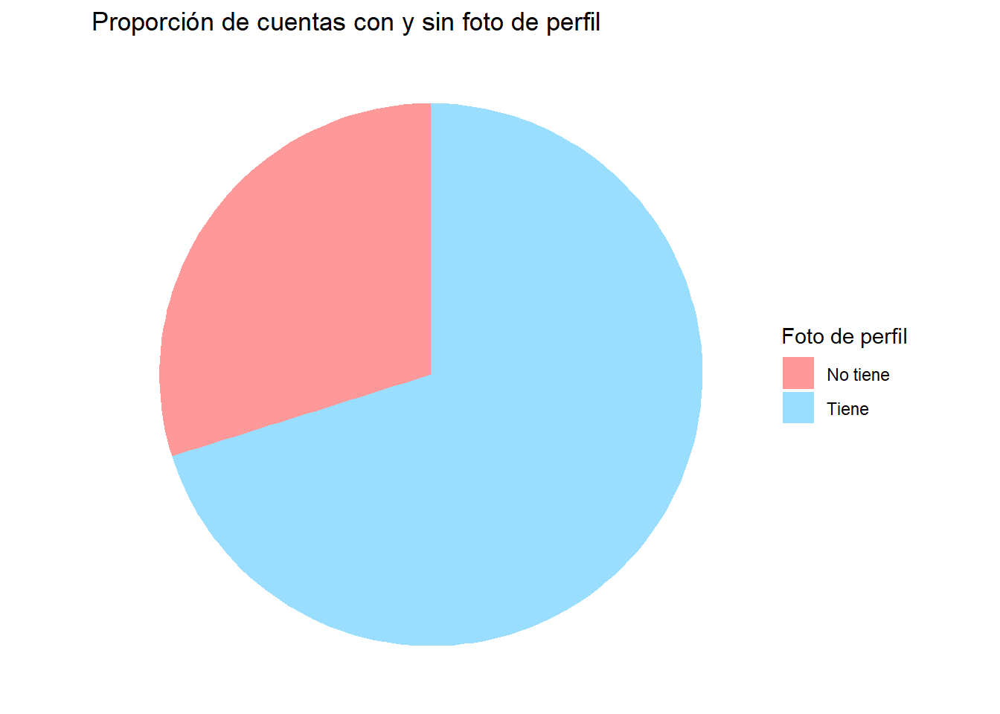
[1] "Cuentas con foto de perfil: 404 (70.14%)"[1] "Cuentas sin foto de perfil: 172 (29.86%)"3.1.3 name..username
Toma el valor 1 si el nombre de la persona es igual al username que se ha puesto en Instagram, y 0 en caso contrario.
name_username_df <- data.frame(
category = c("No", "Sí"),
count = c(sum(dataset$name..username == 0), sum(dataset$name..username == 1))
)
ggplot(name_username_df, aes(x = "", y = count, fill = category)) +
geom_bar(stat = "identity", width = 1) +
coord_polar("y", start = 0) +
theme_void() +
labs(title = "Proporción de cuentas con nombre igual a username",
fill = "Nombre igual a Username") +
scale_fill_manual(values = c("No" = "#FF9999", "Sí" = "#99DDFF"))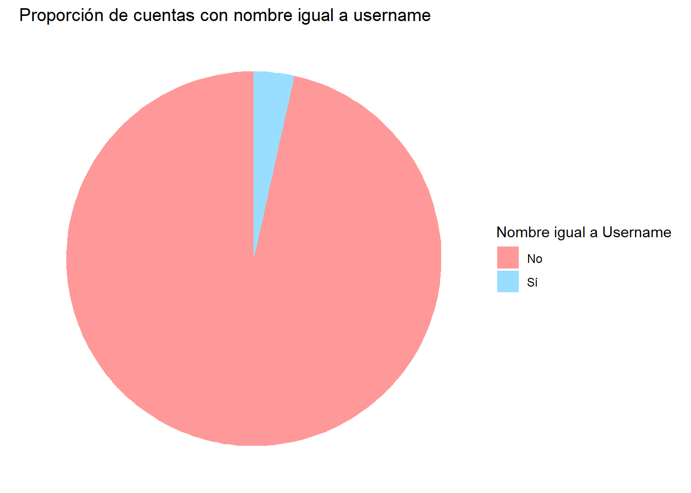
[1] "Cuentas con mismo nombre y username: 20 (3.47%)"[1] "Cuentas con distinto nombre y username: 556 (96.53%)"3.1.4 external.URL
Toma el valor 1 si la cuenta tiene un enlace en el perfil, y 0 si no tiene.
external_url_df <- data.frame(
category = c("No tiene", "Tiene"),
count = c(sum(dataset$external.URL == 0), sum(dataset$external.URL == 1))
)
ggplot(external_url_df, aes(x = "", y = count, fill = category)) +
geom_bar(stat = "identity", width = 1) +
coord_polar("y", start = 0) +
theme_void() +
labs(title = "Proporción de cuentas con y sin enlace en el perfil",
fill = "Enlace en el perfil") +
scale_fill_manual(values = c("No tiene" = "#FF9999", "Tiene" = "#99DDFF"))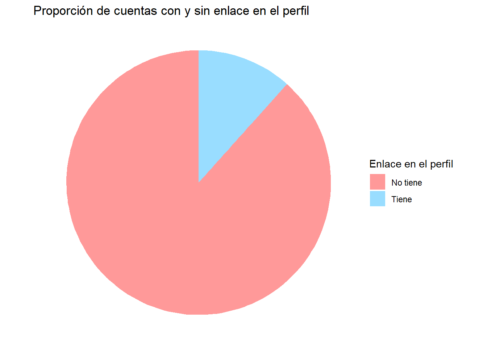
[1] "Cuentas con enlace en el perfil: 67 (11.63%)"[1] "Cuentas sin enlace en el perfil: 509 (88.37%)"3.1.5 private
Toma el valor 1 si la cuenta es privada, y 0 si es pública.
private_df <- data.frame(
category = c("Pública", "Privada"),
count = c(sum(dataset$private == 0), sum(dataset$private == 1))
)
ggplot(private_df, aes(x = "", y = count, fill = category)) +
geom_bar(stat = "identity", width = 1) +
coord_polar("y", start = 0) +
theme_void() +
labs(title = "Proporción de cuentas públicas y privadas", fill = "Cuenta privada") +
scale_fill_manual(values = c("Pública" = "#FF9999", "Privada" = "#99DDFF"))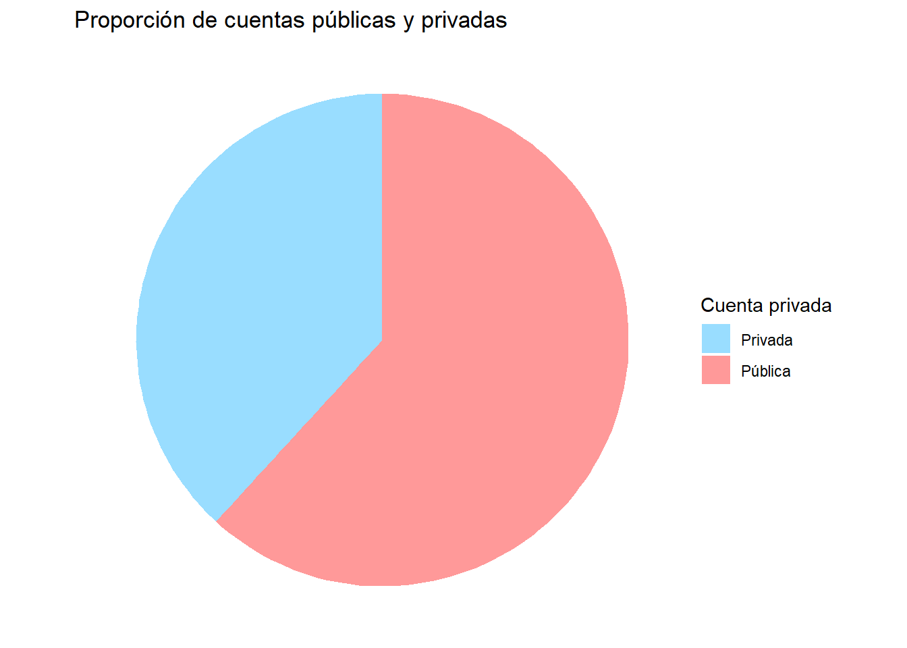
[1] "Cuentas privadas: 220 (38.19%)"[1] "Cuentas públicas: 356 (61.81%)"3.2 Variables no binarias
Como vimos en el análisis exploratorio, las variables no binarias son fullname.words, nums.length.fullname, nums.length.username, description.length, X.posts, X.followers y X.follows.
3.2.1 fullname.words
Representa el número de palabras en el nombre completo del usuario.
ggplot(dataset, aes(x = fullname.words)) +
geom_histogram(binwidth = 1, fill = "#99DDFF", color = "black", alpha = 0.7) +
labs(x = "Longitud de Descripción", y = "Palabras",
title = "Número de palabras en el nombre completo")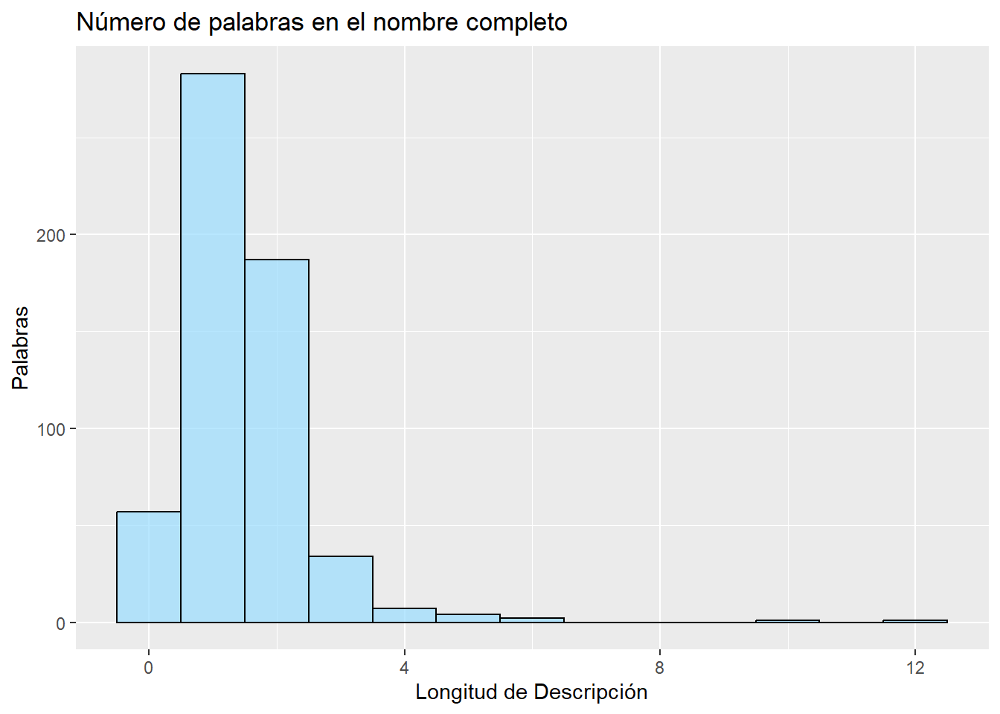
Gráfico circular:
fullname_words_df <- as.data.frame(table(dataset$fullname.words))
ggplot(fullname_words_df, aes(x = "", y = Freq, fill = Var1)) +
geom_bar(stat = "identity", width = 1) +
coord_polar("y", start = 0) +
theme_void() +
labs(title = "Número de palabras en el nombre completo", fill = "Palabras")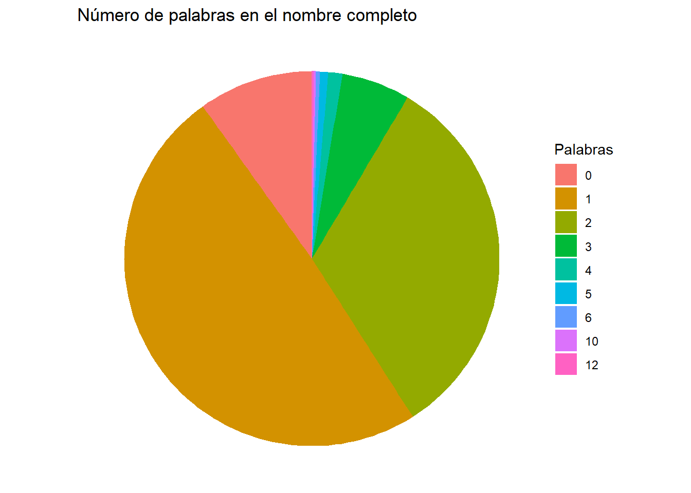
[1] "Cuentas sin nombre completo: 57 (9.9%)"[1] "Cuentas con nombre completo de una palabra: 283 (49.13%)"[1] "Cuentas con nombre de más de una palabra: 236 (40.97%)"3.2.2 nums.length.fullname
Ratio del número de carácteres númericos en el nombre completo respecto a la longitud del nombre completo.
ggplot(dataset, aes(x = nums.length.fullname)) +
geom_histogram(bins = 10, fill = "#99DDFF", color = "black", alpha = 0.7) +
labs(x = "Ratio de números en el nombre Completo", y = "Frecuencia",
title = "Histograma del ratio de números en el nombre Completo")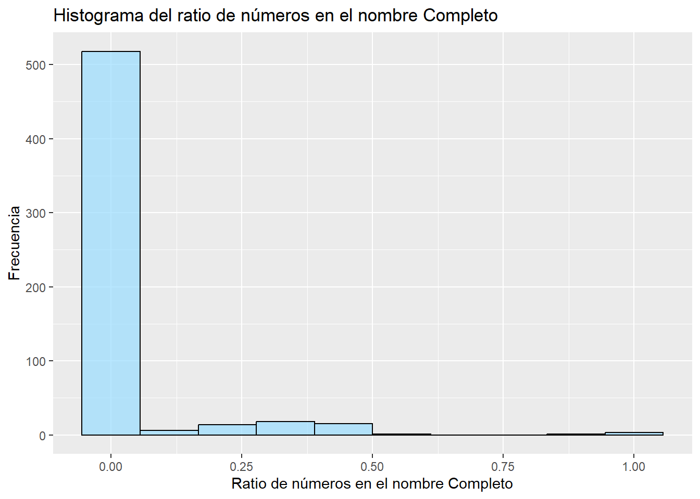
Veamos el gráfico de densidad:
ggplot(dataset, aes(x = nums.length.fullname)) +
geom_density(fill = "#99DDFF", alpha = 0.7) +
labs(x = "Ratio de números en el nombre Completo",
y = "Densidad", title =
"Gráfico de densidad del ratio de números en el nombre Completo")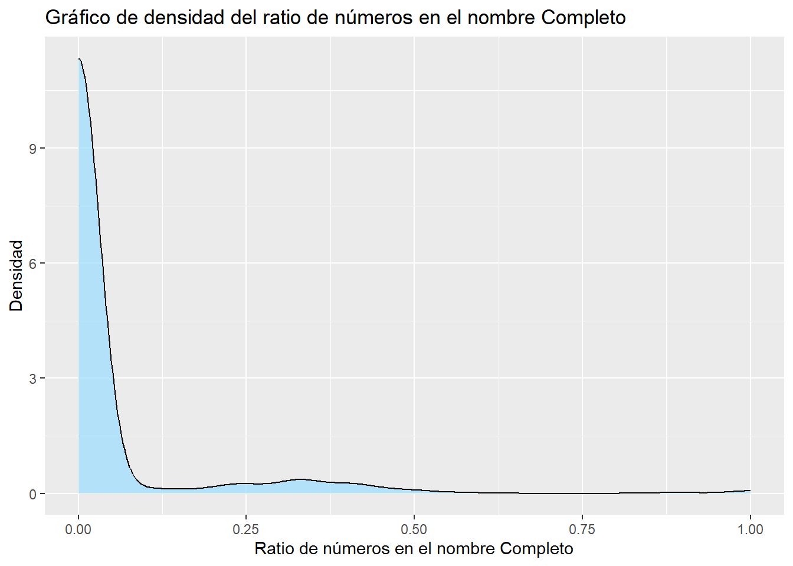
Veamos la cantidad de cuentas con y sin números en el nombre completo.
count_summary <- data.frame(
Categoria = c("Tiene", "No tiene"),
Cantidad = c(count_with_numbers, count_no_numbers)
)
# Gráfico de barras
ggplot(count_summary, aes(x = Categoria, y = Cantidad, fill = Categoria)) +
geom_bar(stat = "identity") +
labs(
x = "Numeros en el nombre completo",
y = "Cantidad de cuentas",
title = "Cuentas con y sin números en el nombre completo"
) +
scale_fill_manual(values = c("Tiene" = "#FF9999", "No tiene" = "#99DDFF"))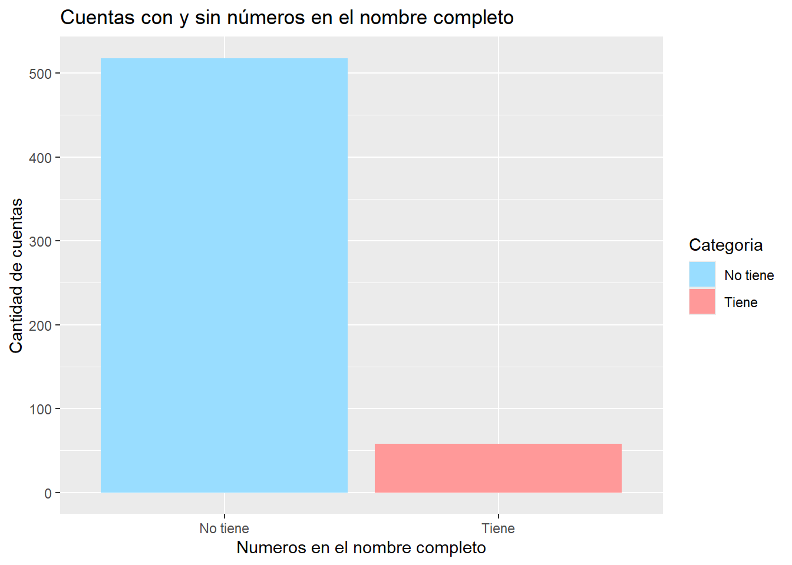
[1] "Cuentas con números en el nombre completo: 58 (10.07%)"[1] "Cuentas sin números en el nombre completo: 518 (89.93%)"3.2.3 nums.length.username
Ratio del número de carácteres númericos en el nombre de usuario respecto a la longitud del nombre de usuario.
Visualizamos:
ggplot(dataset, aes(x = nums.length.username)) +
geom_histogram(bins = 10, fill = "#99DDFF", color = "black", alpha = 0.7) +
labs(x = "Ratio de números en el nombre de usuario", y = "Frecuencia",
title = "Histograma del ratio de números en el nombre de usuario")
Veamos el gráfico de densidad:
ggplot(dataset, aes(x = nums.length.username)) +
geom_density(fill = "#99DDFF", alpha = 0.7) +
labs(x = "Ratio de números en el nombre de usuario",
y = "Densidad", title =
"Gráfico de densidad del ratio de números en el nombre de usuario")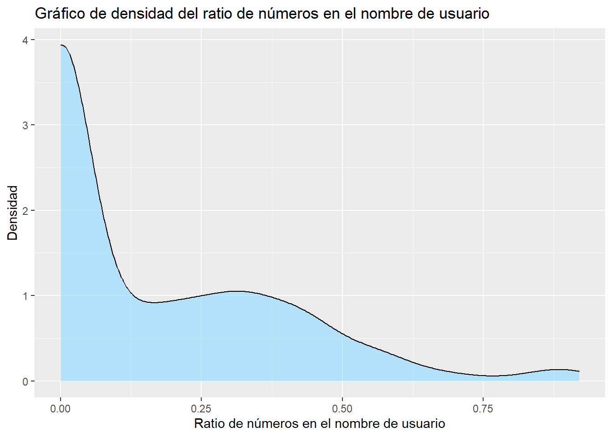
Veamos la cantidad de cuentas con y sin números en el nombre completo.
count_summary <- data.frame(
Categoria = c("Tiene", "No tiene"),
Cantidad = c(count_with_numbers, count_no_numbers)
)
# Gráfico de barras
ggplot(count_summary, aes(x = Categoria, y = Cantidad, fill = Categoria)) +
geom_bar(stat = "identity") +
labs(
x = "Numeros en el nombre de usuario",
y = "Cantidad de cuentas",
title = "Cuentas con y sin números en el nombre de usuario"
) +
scale_fill_manual(values = c("Tiene" = "#FF9999", "No tiene" = "#99DDFF"))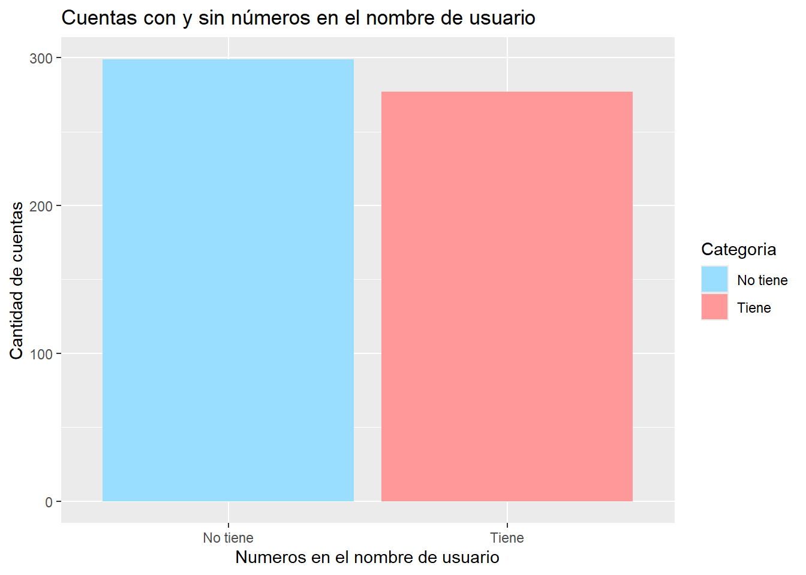
[1] "Cuentas con números en el nombre completo: 277 (48.09%)"[1] "Cuentas sin números en el nombre completo: 299 (51.91%)"3.2.4 description.length
La longitud de la descripción de la cuenta de Instagram.
ggplot(dataset, aes(x = description.length)) +
geom_histogram(bins = 10, fill = "#99DDFF", color = "black", alpha = 0.7) +
labs(x = "Número de carácteres en la descripción", y = "Frecuencia",
title = "Histograma de la longitud de la descripción")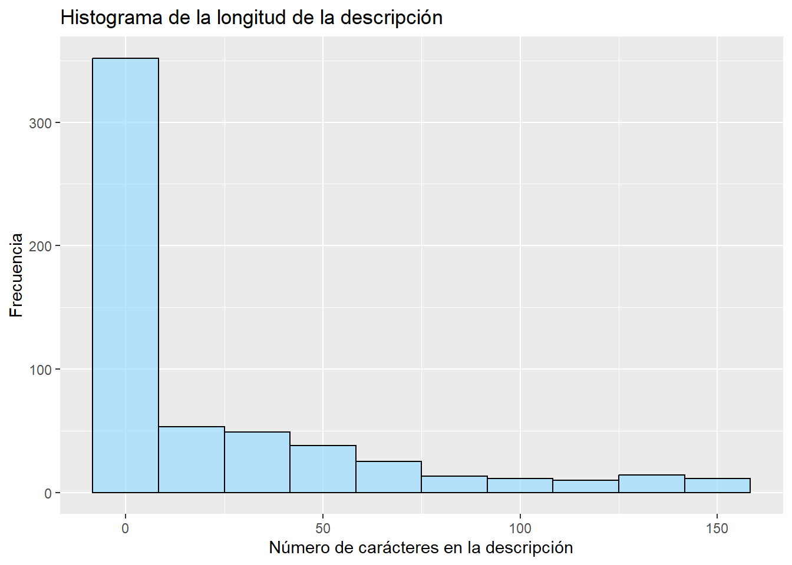
Se observa claramente que hay muchas cuentas que prácticamente no tienen carácteres en la descripción.
count_summary <- data.frame(
Categoria = c("Tiene", "No tiene"),
Cantidad = c(count_with_description, count_no_description)
)
ggplot(count_summary, aes(x = Categoria, y = Cantidad, fill = Categoria)) +
geom_bar(stat = "identity") +
labs(
x = "Descripción",
y = "Cantidad de cuentas",
title = "Cuentas con y sin descripción"
) +
scale_fill_manual(values = c("No tiene" = "#FF9999", "Tiene" = "#99DDFF"))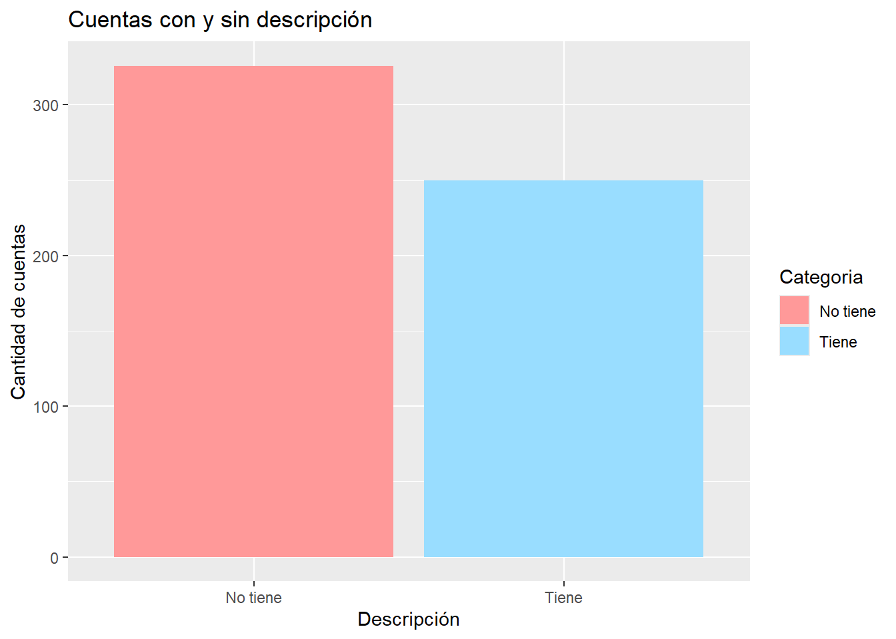
[1] "Cuentas con descripción: 250 (43.4%)"[1] "Cuentas sin descripción: 326 (56.6%)"3.2.5 X.posts
Representa el número de publicaciones que tiene una cuenta de Instagram.
ggplot(dataset, aes(x = X.posts)) +
geom_histogram(bins = 10, fill = "#99DDFF", color = "black", alpha = 0.7) +
labs(x = "Número de publicaciones", y = "Frecuencia",
title = "Histograma del número de publicaciones")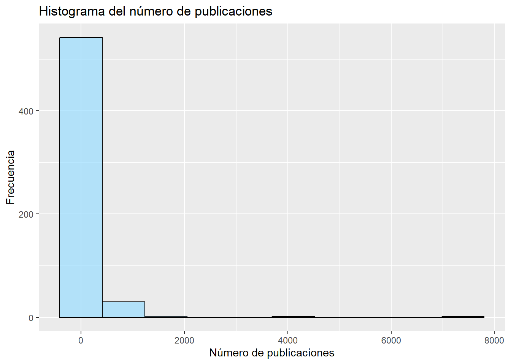
El rango de valores es muy muy amplio y hay mucha concentración en los valores bajos, tenemos que visualizarlo de otra manera, vamos a ver el gráfico de densidad:
ggplot(dataset, aes(x = X.posts)) +
geom_density(fill = "#99DDFF", alpha = 0.7) +
labs(x = "Número de publicaciones", y = "Densidad",
title = "Gráfico de densidad del número de publicaciones")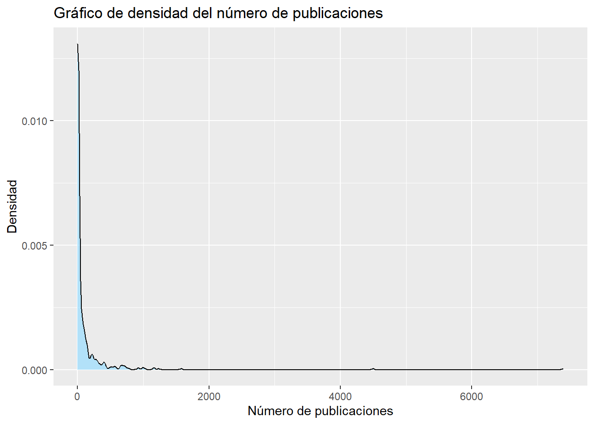
Los valores únicos que tenemos con miles de publicaciones hacen que el gráfico no se pueda visualizar bien. Vamos a realizar el gráfico de nuevo eliminando las cuentas con más de 1000 publicaciones y la cuentas con 0 publicaciones:
cuentas_menos_1000_posts <- dataset %>%
filter(X.posts > 0 & X.posts <= 1000)
ggplot(cuentas_menos_1000_posts, aes(x = X.posts)) +
geom_density(fill = "#99DDFF", alpha = 0.7) +
labs(x = "Número de publicaciones", y = "Densidad",
title = "Gráfico de densidad del número de publicaciones")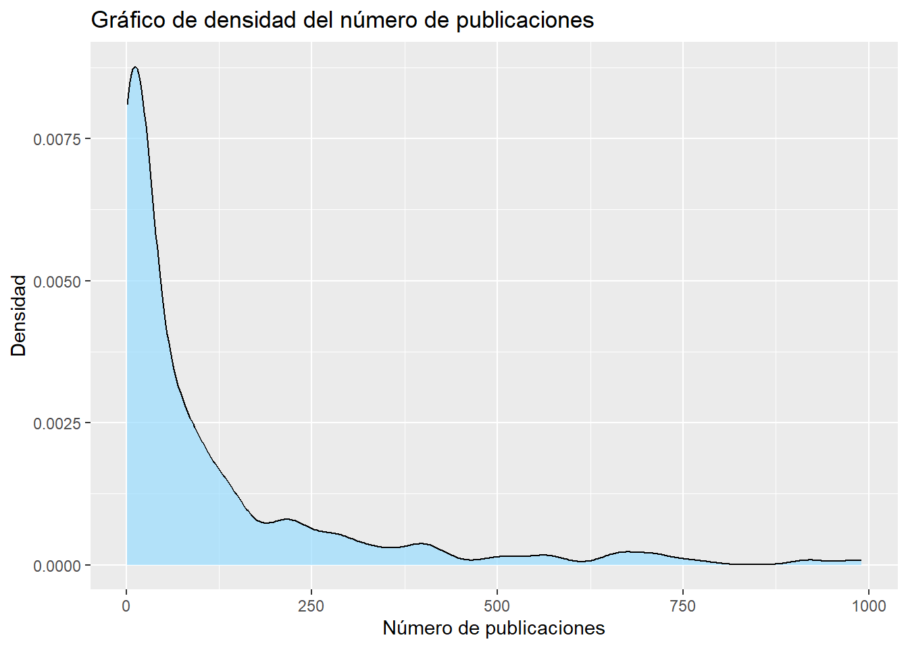
Ahora se observa el gráfico mejor, y vemos que la mayoría de cuentas tienen menos de 125 publicaciones.
count_summary <- data.frame(
Categoria = c("Tiene", "No tiene"),
Cantidad = c(count_with_posts, count_no_posts)
)
# Gráfico de barras
ggplot(count_summary, aes(x = Categoria, y = Cantidad, fill = Categoria)) +
geom_bar(stat = "identity") +
labs(
x = "Publicaciones",
y = "Cantidad de cuentas",
title = "Cuentas con publicaciones y sin publicaciones"
) +
scale_fill_manual(values = c("No tiene" = "#FF9999", "Tiene" = "#99DDFF"))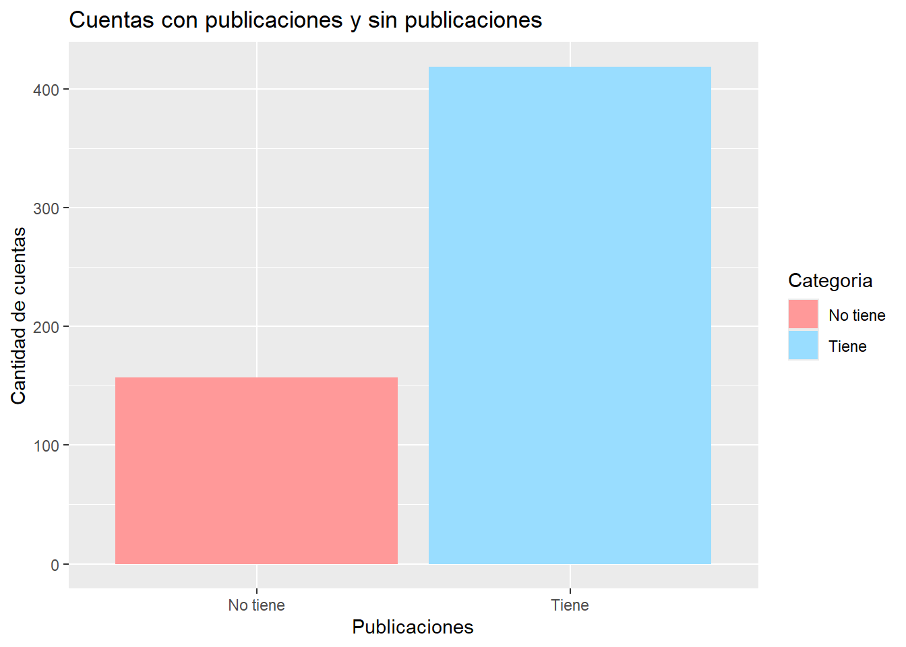
[1] "Cuentas con publicaciones: 419 (72.74%)"[1] "Cuentas sin publicaciones: 157 (27.26%)"3.2.6 X.followers
Representa el número de seguidores que tiene una cuenta de Instagram.
ggplot(dataset, aes(x = X.followers)) +
geom_histogram(bins = 10, fill = "#99DDFF", color = "black", alpha = 0.7) +
labs(x = "Número de seguidores", y = "Frecuencia",
title = "Histograma del número de seguidores")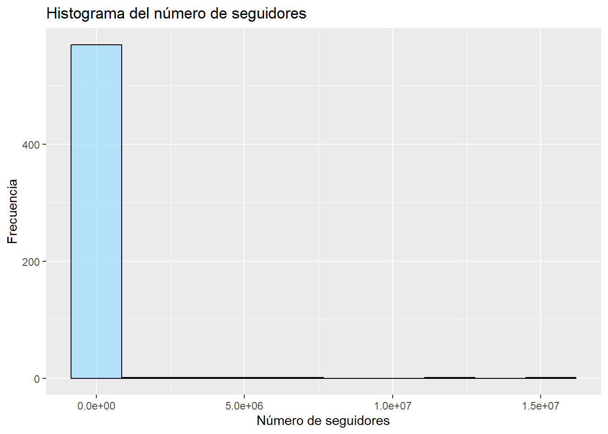
Prácticamente no se ve nada. Vamos a eliminar las cuentas con más de 10000 seguidores y con 0 seguidores.
cuentas_filtradas_seguidores <- dataset %>%
filter(X.followers > 0 & X.followers < 10000)
ggplot(cuentas_filtradas_seguidores, aes(x = X.followers)) +
geom_density(fill = "#99DDFF", alpha = 0.7) +
labs(x = "Número de seguidores", y = "Densidad",
title = "Gráfico de densidad del número de seguidores")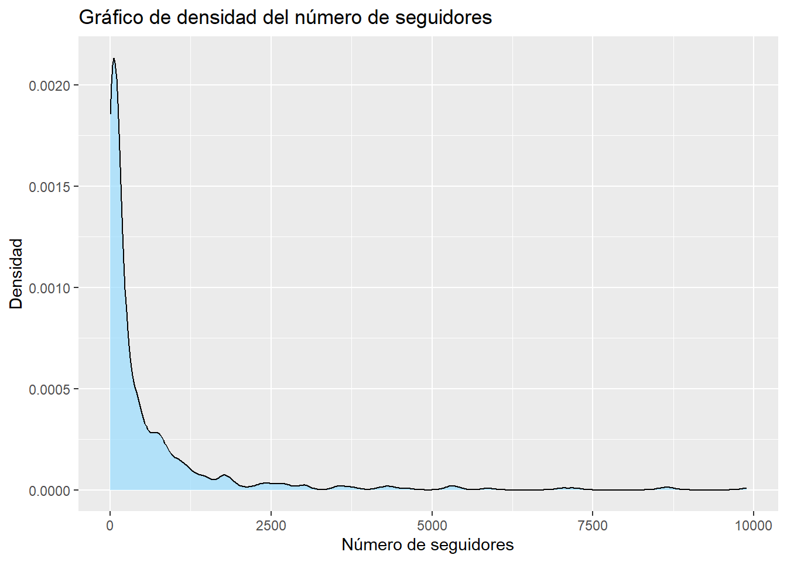
La mayoría de cuentas tienen menos de 1000 seguidores.
count_summary <- data.frame(
Categoria = c("Tiene", "No tiene"),
Cantidad = c(cuentas_con_seguidores, cuentas_sin_seguidores)
)
ggplot(count_summary, aes(x = Categoria, y = Cantidad, fill = Categoria)) +
geom_bar(stat = "identity") +
labs(
x = "Seguidores",
y = "Cantidad de cuentas",
title = "Cuentas con seguidores y sin seguidores"
) +
scale_fill_manual(values = c("No tiene" = "#FF9999", "Tiene" = "#99DDFF"))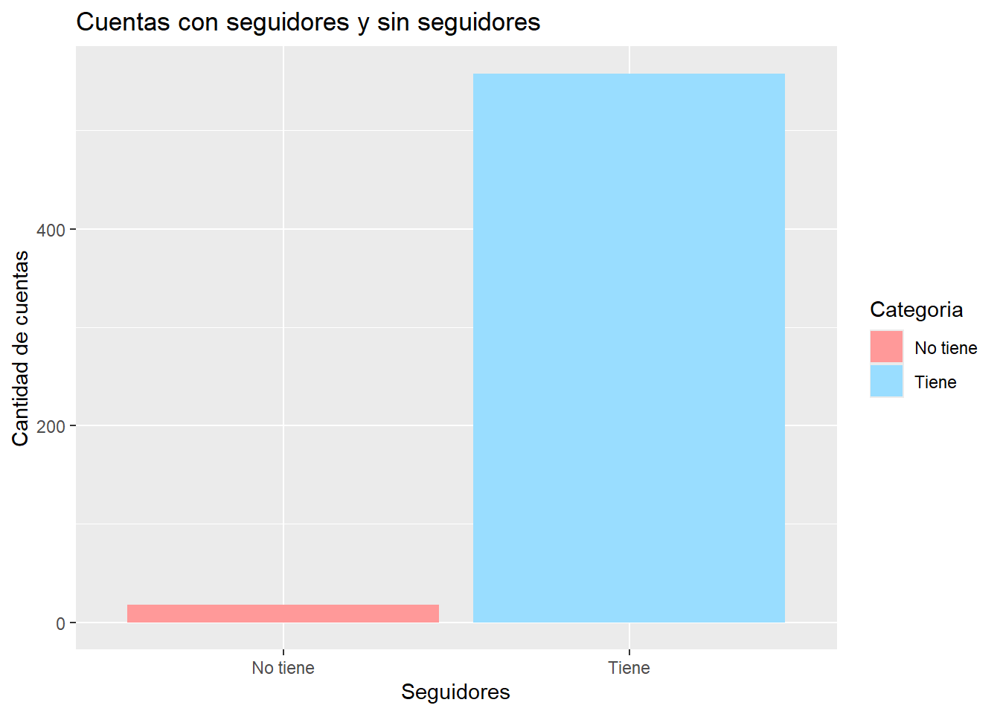
[1] "Cuentas con seguidores: 558 (96.88%)"[1] "Cuentas sin seguidores: 18 (3.12%)"3.2.7 x.follows
Representa el número de personas que sigue una cuenta de Instagram.
ggplot(dataset, aes(x = X.follows)) +
geom_histogram(bins = 10, fill = "#99DDFF", color = "black", alpha = 0.7) +
labs(x = "Número de seguidos", y = "Frecuencia",
title = "Histograma del número de seguidos")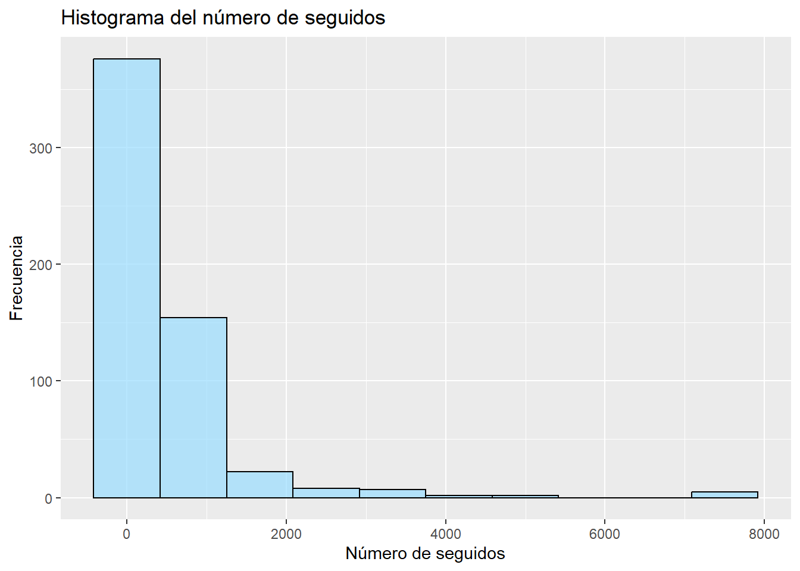
La mayoría de cuentas siguen a menos de 1500 personas.
count_summary <- data.frame(
Categoria = c("Tiene", "No tiene"),
Cantidad = c(cuentas_con_seguidos, cuentas_sin_seguidos)
)
ggplot(count_summary, aes(x = Categoria, y = Cantidad, fill = Categoria)) +
geom_bar(stat = "identity") +
labs(
x = "Seguidos",
y = "Cantidad de cuentas",
title = "Cuentas con seguidos y sin seguidos"
) +
scale_fill_manual(values = c("No tiene" = "#FF9999", "Tiene" = "#99DDFF"))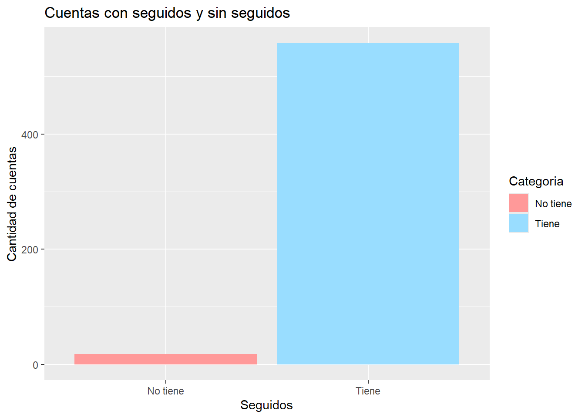
[1] "Cuentas con seguidos: 558 (96.88%)"[1] "Cuentas sin seguidos: 18 (3.12%)"3.3 Análisis multivariado
Vamos a crear algunos gráficos interesantes que relacionen distintas variables entre sí:
- Relación entre si la cuenta es falsa y si tiene foto de perfil
ggplot(dataset, aes(x = factor(profile.pic), fill = factor(fake))) +
geom_bar(position = "fill") +
labs(x = "Foto de perfil", y = "Proporción", fill = "Cuenta falsa",
title = "Proporción de cuentas falsas según tengan foto de perfil") +
scale_x_discrete(labels = c("0" = "No tiene", "1" = "Tiene")) +
scale_fill_manual(values = c("0" = "#99DDFF", "1" = "#FF9999"))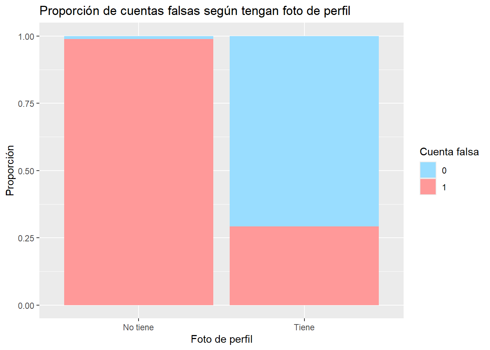
Se observa que la gran mayoria de cuentas que no tienen foto de perfil, son falsas, mientras que para las cuentas con foto de perfil, la mayoría son reales, aunque con una proporción mucho más cercana al punto medio.
- Relación entre la longitud de la descripción y el número de seguidores
ggplot(dataset, aes(x = description.length, y = X.followers)) +
geom_point(alpha = 0.5, color = "#FF9999") +
geom_smooth(method = "lm", color = "blue") +
labs(x = "Longitud de la descripción", y = "Número de seguidores",
title = "Relación entre la longitud de la descripción y el número de seguidores") +
scale_y_log10()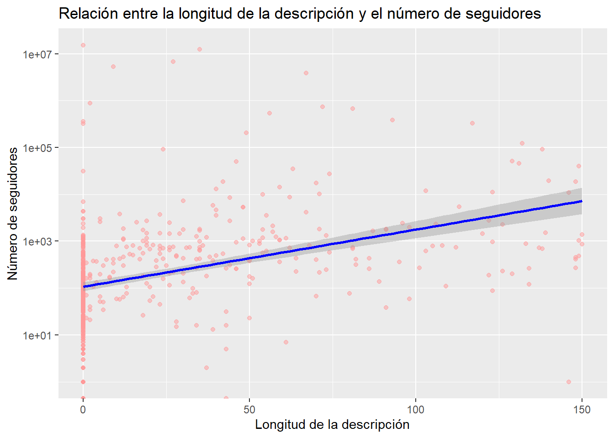
Observamos una interesante relación entre el número de seguidores y la longitud de la descripción. Sin la escala logarítmica no se apreciaría nada. Parece ser que a más larga la descripción, más famosa es la cuenta. No parece algo extremadamente relevante, ya que tenemos un límite de longitud de descripción en las cuentas de Instagram, pero si tiene cierto sentido que una cuenta famosa albergue más información en la descripción que una cuenta normal.
- Distribución de la longitud de la descripción según si la cuenta es privada o pública
ggplot(dataset, aes(x = description.length, fill = factor(private))) +
geom_density(alpha = 0.6) +
labs(x = "Longitud de la descripción", y = "Densidad", fill = "Cuenta privada") +
scale_fill_manual(values = c("0" = "#FF9999", "1" = "#99DDFF")) +
theme_minimal() +
labs(title = "Distribución de la longitud de la descripción según privacidad de la cuenta")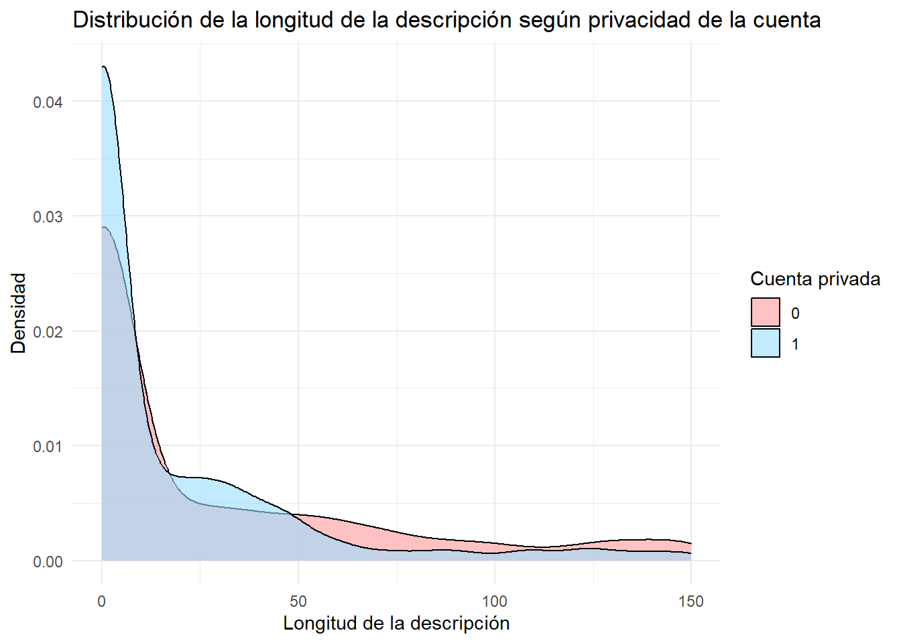
Las cuentas públicas suelen tener más descripción.
- Relación entre el número de seguidores y el número de seguidos
ggplot(dataset, aes(x = X.follows, y = X.followers)) +
geom_point(alpha = 0.5, color = "#99DDFF") +
geom_smooth(method = "lm", color = "#FF9999") +
labs(x = "Número de seguidos", y = "Número de seguidores") +
theme_minimal() +
labs(title = "Relación entre el número de seguidores y seguidos") +
scale_y_log10()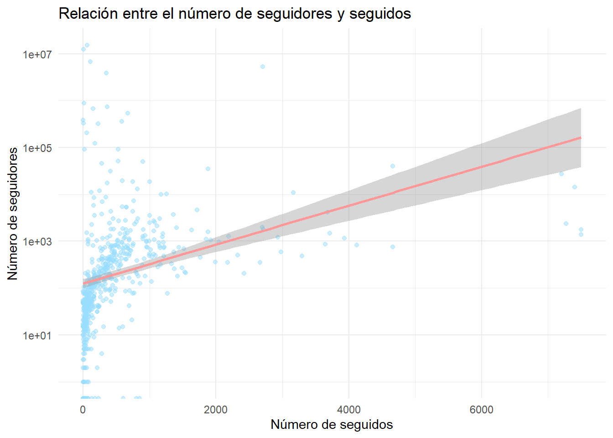
No parece que haya relación predecible entre los seguidos y los seguidores.
- Histogramas de variables no binarias
numeric_vars <- dataset %>%
select(nums.length.username, fullname.words, nums.length.fullname,
description.length, X.posts, X.followers, X.follows)
numeric_vars %>%
gather(key = "variable", value = "value") %>%
ggplot(aes(x = value)) +
geom_histogram(bins = 30, fill = "skyblue", color = "black") +
facet_wrap(~ variable, scales = "free") +
labs(title = "Distribución de Variables Numéricas")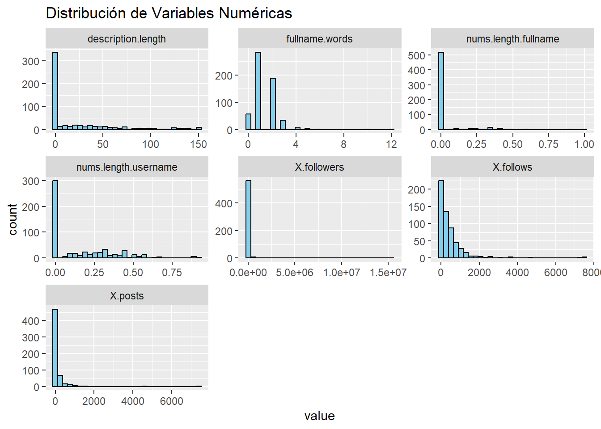
Todas siguen una distribución parecida, independientemente de que signifiquen cosas totalmente distintas, suelen concentrarse en su mayoría, cerca del 0. Esto probablemente se deba a que los más fácil de conseguir para estas variables en Instagram, sea 0, independientemente de lo que signifiquen.
dataset <- dataset %>%
mutate(posts_category = cut(X.posts, breaks = c(-1, 10, 50, 100, 500, 1000, Inf),
labels = c("0-10", "11-50",
"51-100", "101-500",
"501-1000", ">1000")))
ggplot(dataset, aes(x = posts_category, fill = factor(fake))) +
geom_bar(position = "fill") +
scale_fill_manual(values = c("0" = "#99DDFF", "1" = "#FF9999")) +
labs(x = "Número de publicaciones", y = "Proporción",
title = "Proporción de cuentas falsas según número de publicaciones",
fill = "Cuenta falsa") +
theme_minimal()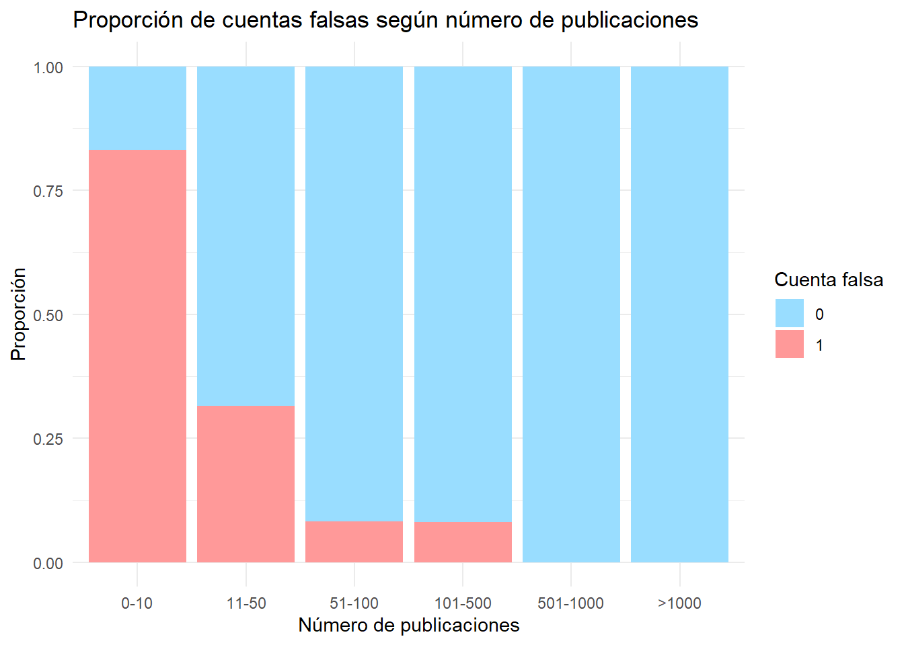
No hay cuentas falsas con más de 500 publicaciones realizadas.
3.4 Conclusiones
La visualización de datos nos ha permitido entender mejor la distribución y las relaciones entre las variables del dataset. Utilizando la librería ggplot2, hemos creado gráficos claros y efectivos para variables binarias y no binarias. Los histogramas y gráficos circulares han facilitado la identificación de patrones y proporciones. En el análisis multivariado, hemos observado correlaciones relevantes, como la relación entre cuentas falsas y la presencia de foto de perfil. Estas visualizaciones no solo enriquecen el análisis exploratorio, sino que también sirven como base sólida para futuros modelos predictivos y toma de decisiones informadas.